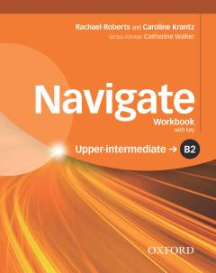

NBB2 darajadagi ingliz tili grammatikasi va leksikasini mustahkamlash uchun ish daftari.
Ushbu nashr ingliz tilini B2 yuqori o'rta darajada o'rganuvchilar uchun mo'ljallangan amaliy ish daftari hisoblanadi. Kitob turli grammatik qoidalar, so'z boyligini oshirish mashqlari va ko'nikmalarni mustahkamlash uchun topshiriqlarni o'z ichiga oladi.